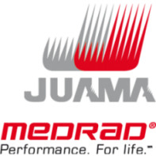
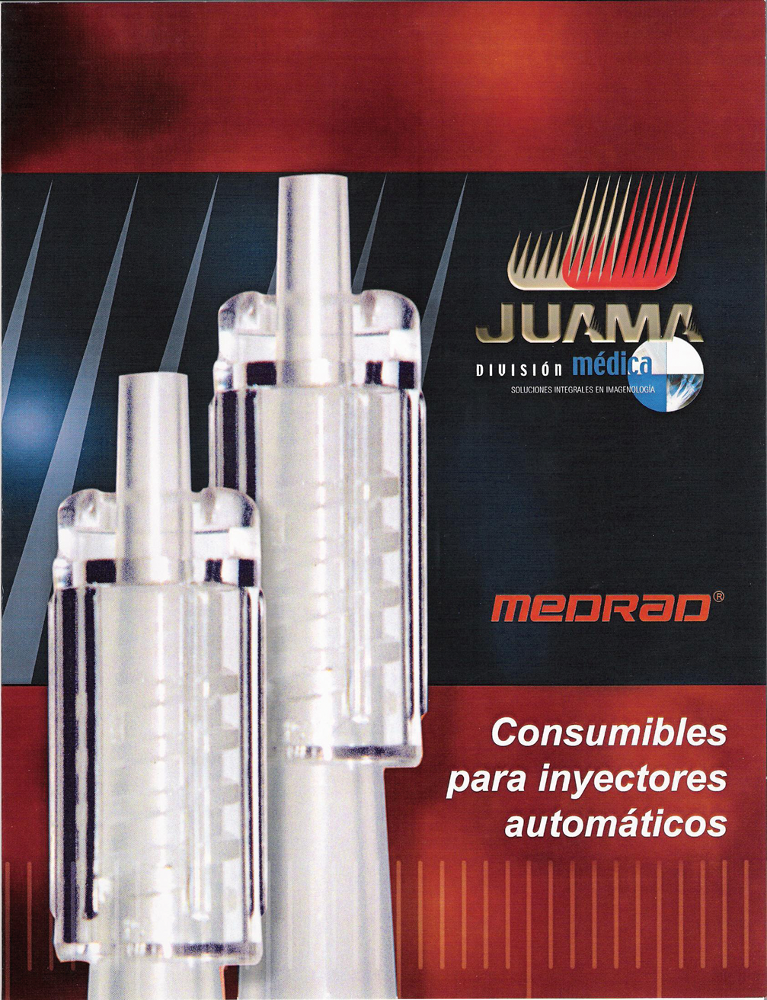

Consumibles para inyectores automáticos medrad

PRESENTACIÓN:
Para un óptimo funcionamiento de sus equipos MEDRAD contamos con los siguientes consumibles:
Jeringas y conectores para inyectores de angiografía MEDRAD:
• Jeringa 150-FT-Q.
• Tubo DCT-130.
• Tubo DCT-148.
Jeringas y tubos conectores para inyectores de tomografía computarizada MEDRAD:
• Jeringa CTP-200-FLS.
• Tubo conector LPDCT-160.
• Jeringa SDS-CTP-QFT.
• SSIT-96-VLD (tubo conector).
Jeringas y tubos conectores para inyectores de resonancia magnética MEDRAD:
• Jeringa SQK-65V5.
• Jeringa SSQK-65/115VS.
• Tubo conector de baja presión SSIT-96-VLD.
Registro: 0171C98 SSA
DATOS COMPLEMENTARIOS: Para mayor información y asesoría técnica, favor de comunicarse a:
JUAMA, S.A. DE C.V.
Tels.: (55) 3098-9712, 3098-9727 y 3098-9737
Fax: (55) 5666-7694
e-mail: medica@juama.com
www.juama.com